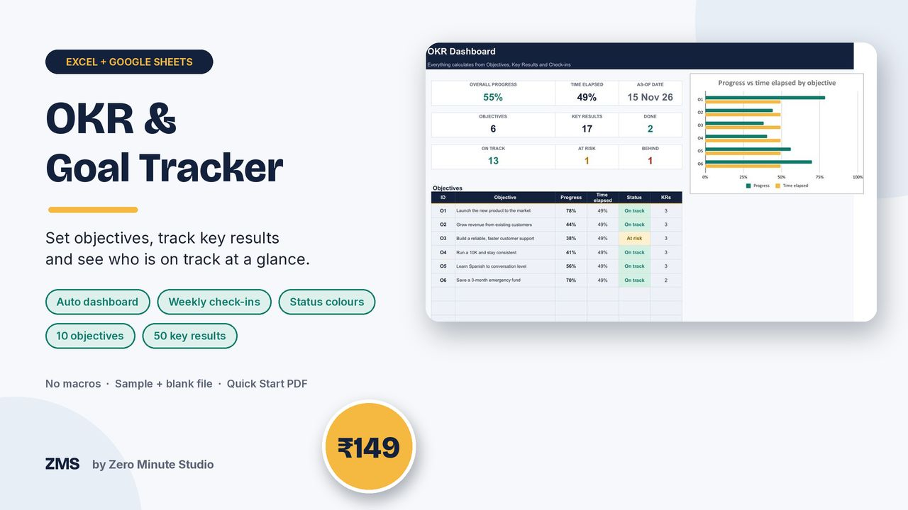
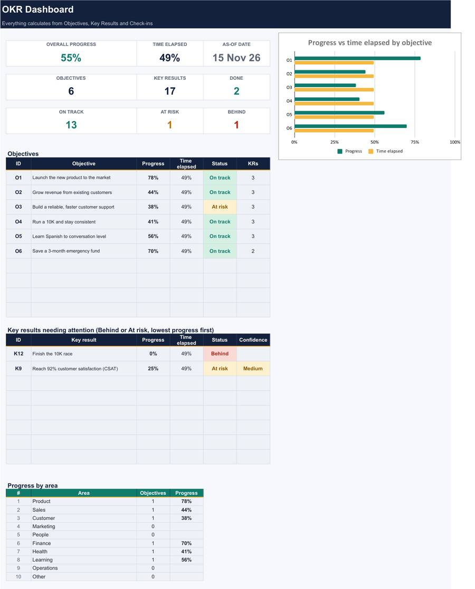
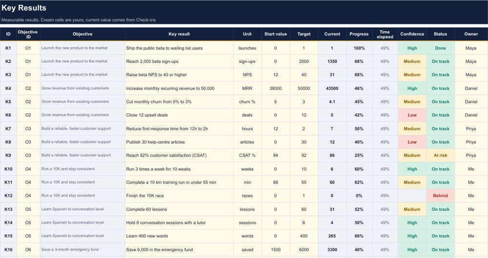

OKR & Goal Tracker for Excel & Google Sheets

Goals only work when you can see them. Write your objectives, add measurable key results, log a quick check-in each week, and the file shows what is on track, what is at risk and what has fallen behind. Use it for a team, a business, or your own goals.
- Dashboard: overall progress vs time elapsed, counts of Done, On track, At risk and Behind, and a chart by objective
- Up to 10 objectives and 50 key results, each with start value, target, current value and confidence
- Targets can go down as well as up (churn, response time, cost)
- Weekly check-in log: the latest row updates each key result automatically
- "Needs attention" list and progress by area; owners, areas and tolerances are editable
- You get a sample file with a made-up quarter, a blank file and a 2-page Quick Start PDF
- Excel 2010+ and Google Sheets, no macros
Preview


FAQ
Does it work in Google Sheets? Yes. Upload the .xlsx to Google Drive and save it as a Google Sheet, or use Excel 2010 or newer.
Can I use it for personal goals? Yes. One objective per goal, with measurable key results.
How do I get it? Instantly after payment: a sample .xlsx, a blank .xlsx and a 2-page Quick Start PDF.
We don't do refund & return ✌️